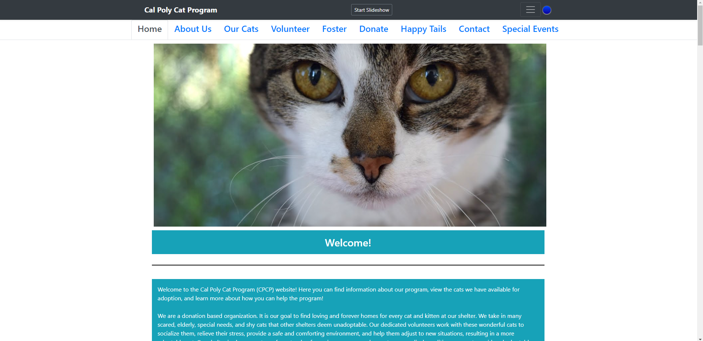
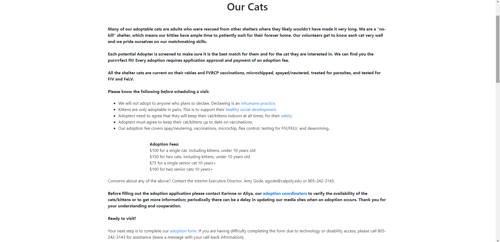

James Lilly - Final project proposal
Introduction
SLO Animal Sanctuary and Adoption Center
The SLO Adoption Center is a centralized animal sanctuary and adoption organization. It acts as a sanctuary for the many scared, elderly, special needs, and shy cats and dogs that other shelters deem unadoptable. A staff of dedicated employees work with these wonderful cats to socialize them, relieve their stress, provide a safe and comforting environment, and help them adjust to new situations, resulting in a more adoptable pet. This company will also be an informational hub for animal care and adoption info that potential adopters will need to consider before becoming a pet owner. SLO ASAC also partakes in adoptions and TNR (Trap-and-Neuter) programs to help manage the health and size of the local cat populaion.
Target audience
Our target audience is those looking into adopting a pet or looking for care information on their current pet. It is also a source of TNR
The goal of the SLO Animal Sanctuary and Adoption Center is to increase awareness of the need for proper Trap and Spay/Neuter programs in managing feral cat populations while helping pets which normally have difficulties getting adopted get into loving homes. ASAC is dedicated to rehabilitating rescue pets and providing all the neccessary care they need while providing the public with information on the how-tos on and benefits of pet ownership.
Comparative analysis
Cal Poly Cat Program
 Woods Humane Society
Ventura County Animal Services

Website content
Home
The SLO Animal Sanctuary and Adoption Center is an independent nonprofit organization dedicated to the humane care of homeless dogs and cats in San Luis Obispo County. Our work includes finding loving homes for pets, working to end pet overpopulation through spay/neuter efforts, providing a sanctuary for abused and unadoptable animals, and humane education opportunities for everyone. We rely on the dedication of our volunteers, trained employees and the generosity of our donors as we improve the lives of animals throughout our community.
Image of an adoptable cat.
Our Animals
Many of our adoptable cats and dogs are adults who were rescued from other shelters where they likely wouldn't have made it very long. We are a "no-kill" shelter, which means our kitties and puppies have ample time to patiently wait for their forever home. Our volunteers and employees get to know each cat very well and we pride ourselves on our matchmaking skills. Each potential Adopter is screened to make sure it is the best match for them and for the cat or dog they are interested in. We can find you the purrrrfect fit! Every adoption requires application approval and payment of an adoption fee. All the shelter animals are current on their rabies and FVRCP vaccinations, microchipped, spayed/neutered, treated for parasites, and tested for FIV and FeLV. Below are our adoptable animals, their names, and their bonded pairings!
Image of adoptible animal 1
Image of adoptible animal 2
Image of adoptible animal 3
Image of adoptible animal etc...
Our Services
We offer an extensive catalog of services, from TNR trapping for feral cat colonies to spay and neutering for animals young and old. We also have an on-site shelter and partially outdoor sanctuary designed to entertain and socialize our residents while they wait for their forever homes. Above all, we offer adoption support for anyone interested in giving one of our many pups or kittens the forever home they deserve!
Picture of a cat trapped in a TNR operation
Contact Us
Have any questions for us about any of our services? Want to contribute? Below are the many different ways we can start a conversation! (Insert Instagram, Twitter, fake email, etc.)
Cute Puppies playing in a shelter yard